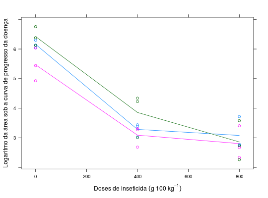

Dados de um experimento com dois fatores, em delineamento de parcelas divididas em blocos ao acaso. O experimento avaliou o efeito de 3 doses do fungicida Fongorene (0, 400 e 800 gramas por 100 kg) em cultivares de arroz. Mediu-se a percentagem de área foliar lesionada por brusone em cinco datas, e depois calculou-se a área sob a curva do progresso da doença (ASCPD). Os dados estão transformados em logaritmo.
Um data.frame com 27 observações e 4 variáveis
cultblocodoseascpdZIMMERMANN (2004), (Tabela 10.6, pág. 201)
library(lattice) data(ZimmermannTb10.6)#> Warning: data set ‘ZimmermannTb10.6’ not foundstr(ZimmermannTb10.6)#> 'data.frame': 27 obs. of 4 variables: #> $ cult : Factor w/ 3 levels "Canastra","Maravilha",..: 1 2 3 1 2 3 1 2 3 1 ... #> $ bloco: Factor w/ 3 levels "1","2","3": 1 1 1 2 2 2 3 3 3 1 ... #> $ dose : num 0 0 0 0 0 0 0 0 0 400 ... #> $ ascpd: num 6.3 4.93 6.38 6.04 6.04 ...xyplot(ascpd ~ dose, groups = cult, data = ZimmermannTb10.6, type = c("p", "a"), xlab = expression("Doses de inseticida"~(g~100~kg^{-1})), ylab = "Logaritmo da área sob a curva de progresso da doença")